Status as of 2026-11-14 · Open the site → · source-map.md · technical-audit.md · educational-audit.md · browser-test-report.md
13 / 14 acceptance criteria met visual A/B not run
Content, technical accuracy, educational clarity and browser function have been independently checked. Visual quality could not be benchmarked because no reference set was supplied.
none recorded
The brief requires real benchmark examples in ./reference/visual_bar/. That folder was not provided, so no blind A/B comparison was performed and no verdict is claimed. Supply the references to run this gate.
| # | Chapter · interaction | Status | Current render | Interaction state |
|---|---|---|---|---|
| 01 | The AI chip ecosystem Logic vs memory explorer | built tech ✓ browser ✓ | 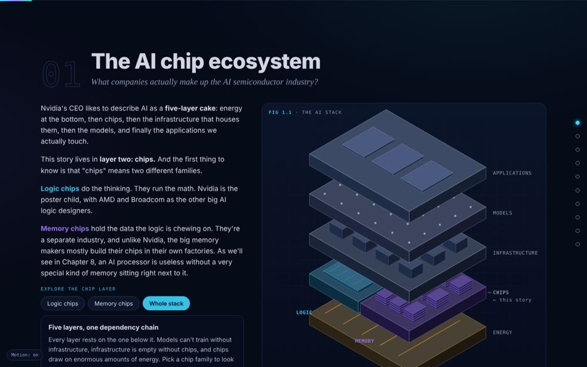 | 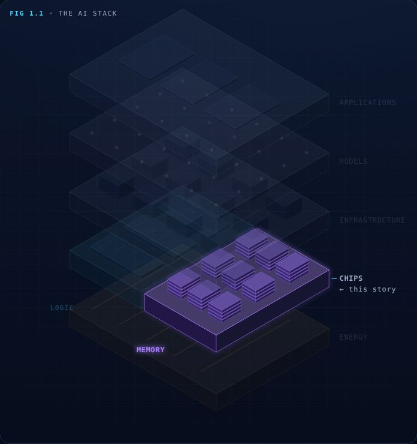 |
| 02 | The chip order Scroll animation (order → spec) | built tech ✓ browser ✓ | 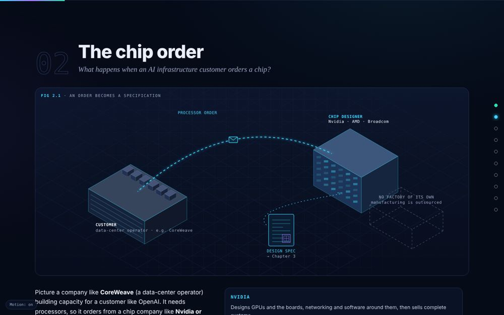 | scroll-only (no control required) |
| 03 | Designing the chip 4-view design toggle | built tech ✓ browser ✓ | 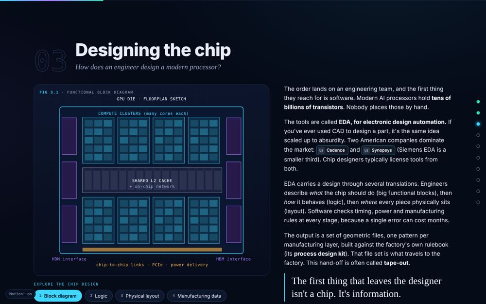 | 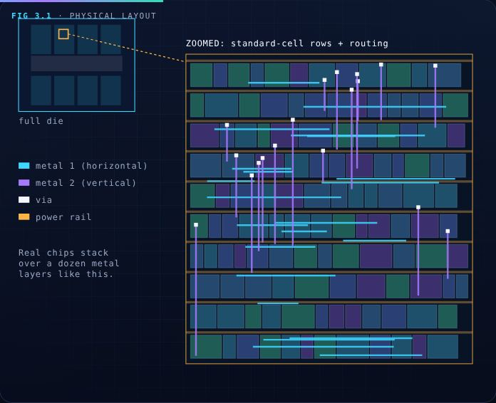 |
| 04 | The silicon wafer Wafer → device zoom | built tech ✓ browser ✓ | 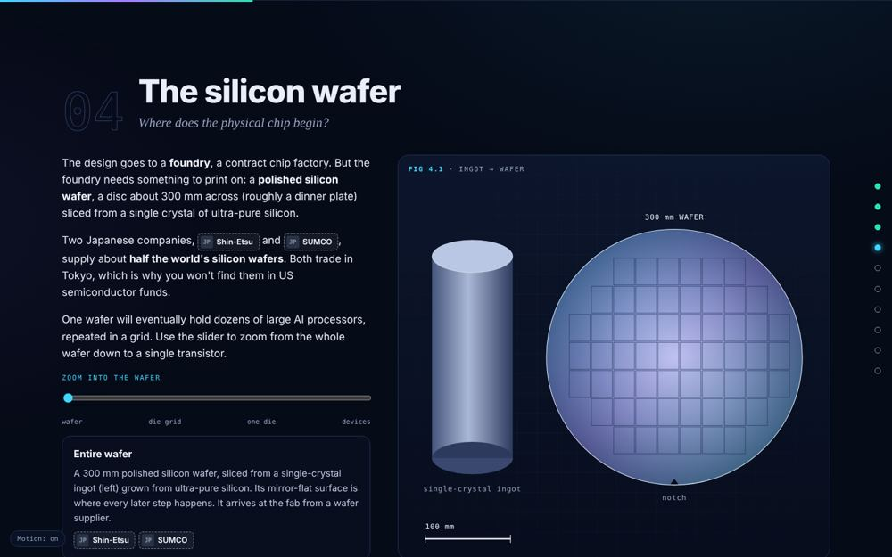 | 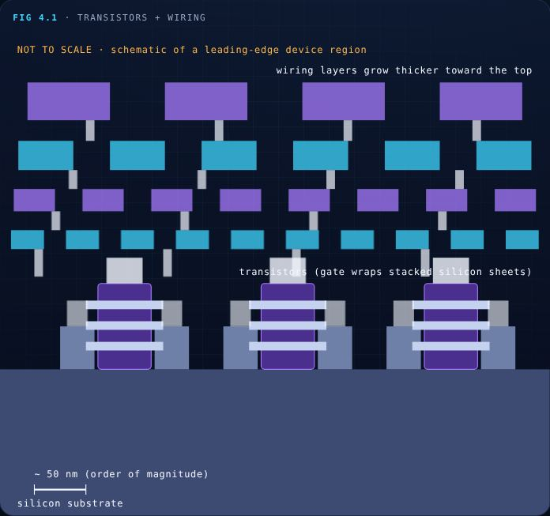 |
| 05 | Inside the fab 8-stage fabrication stepper | built tech ✓ browser ✓ | 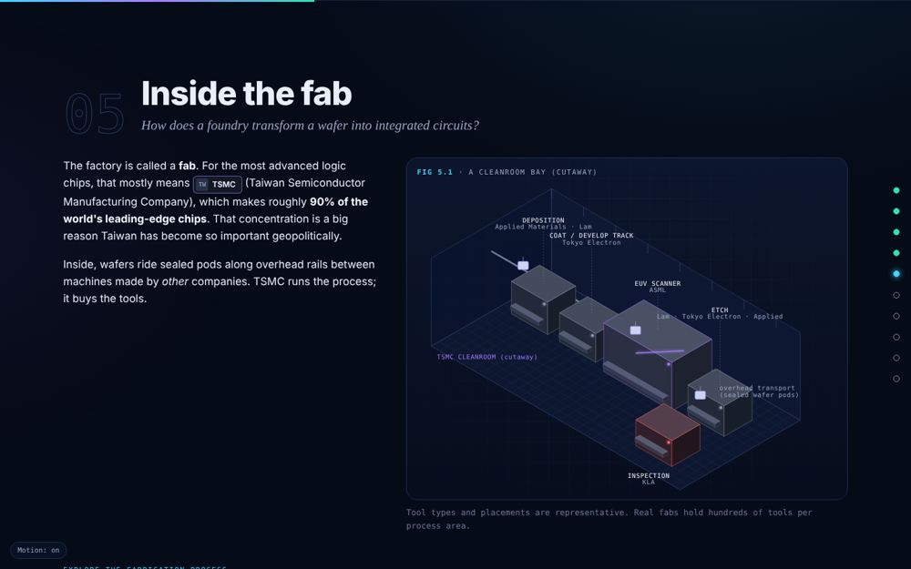 | 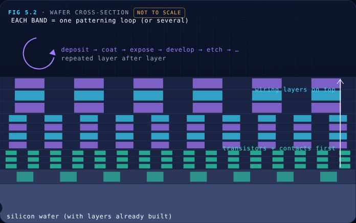 |
| 06 | Lithography up close Follow the pattern (6 steps) | built tech ✓ browser ✓ | 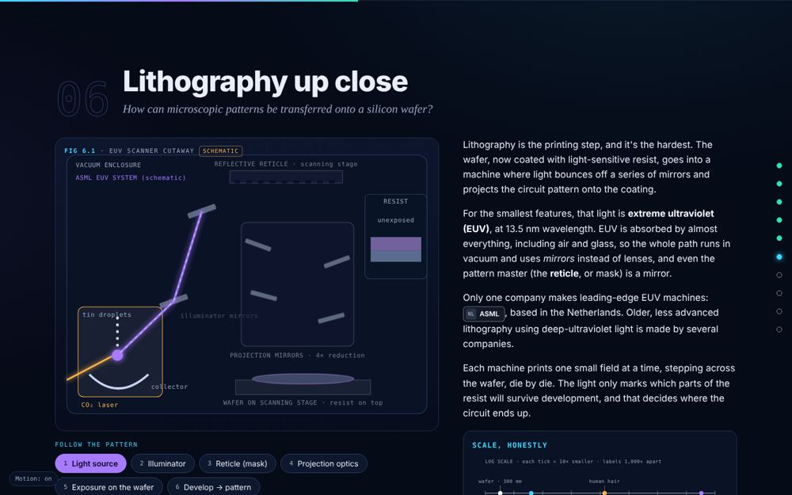 | 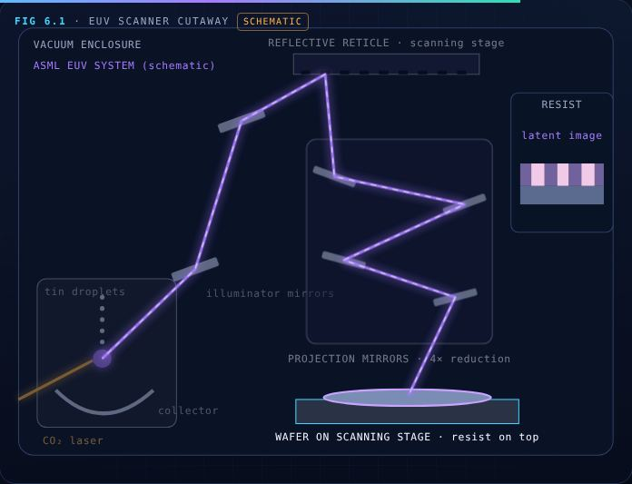 |
| 07 | From wafer to finished die Wafer inspection map, sort, dice | built tech ✓ browser ✓ | 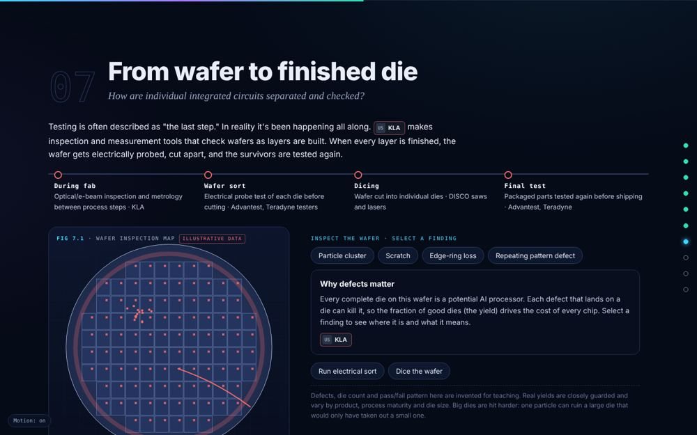 | 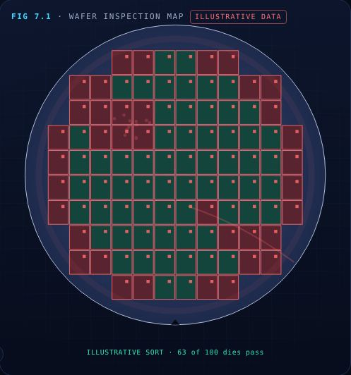 |
| 08 | Advanced packaging and HBM Exploded CoWoS-L package | built tech ✓ browser ✓ | 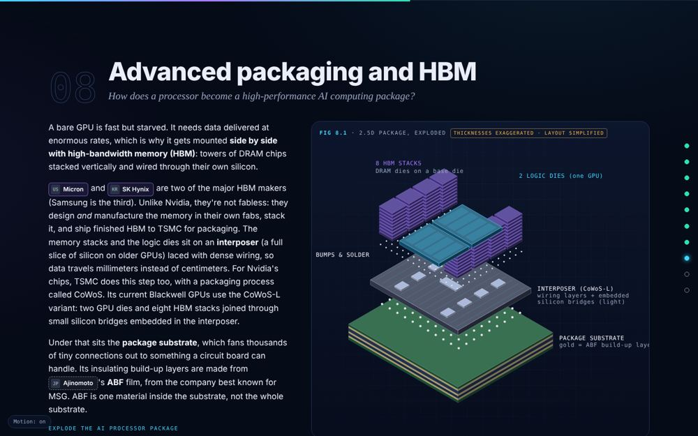 | 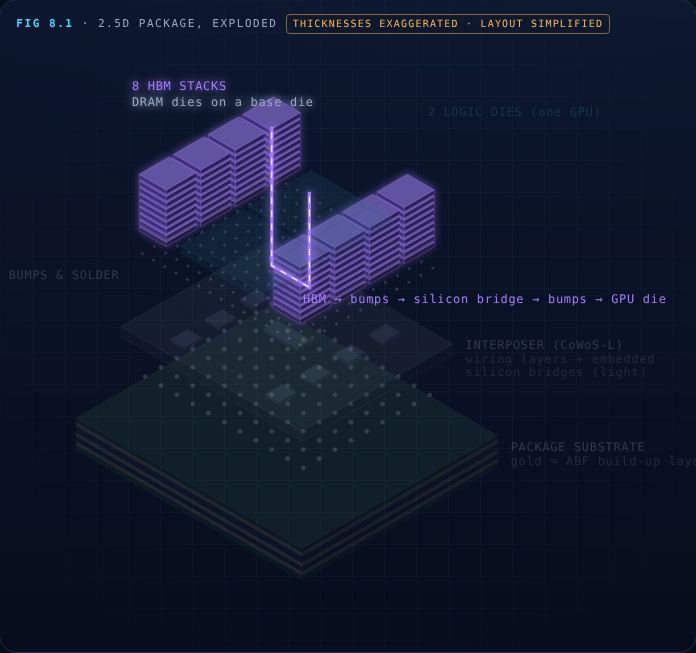 |
| 09 | From chip to compute tray Scroll-driven tray assembly | built tech ✓ browser ✓ | 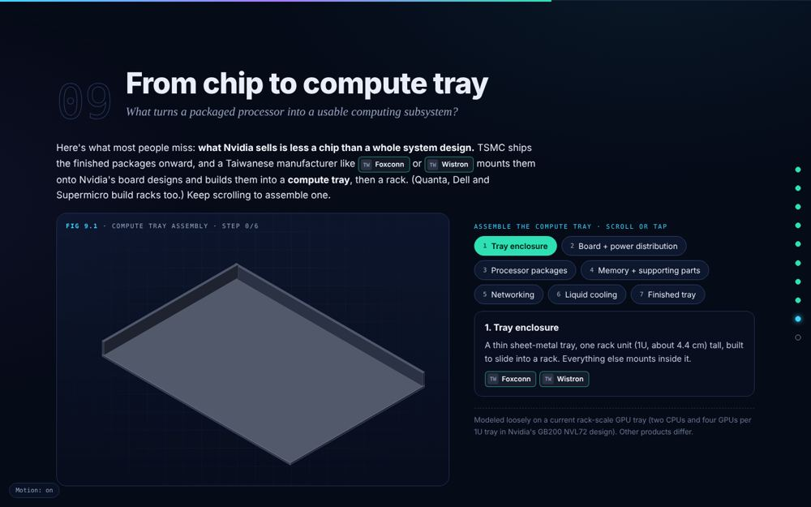 | 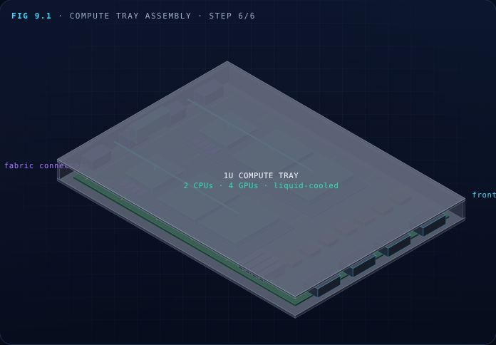 |
| 10 | The complete AI rack Rack layers + supply-chain map | built tech ✓ browser ✓ | 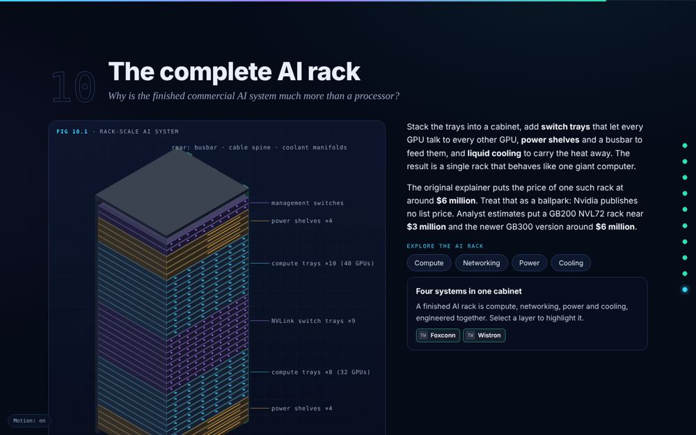 | 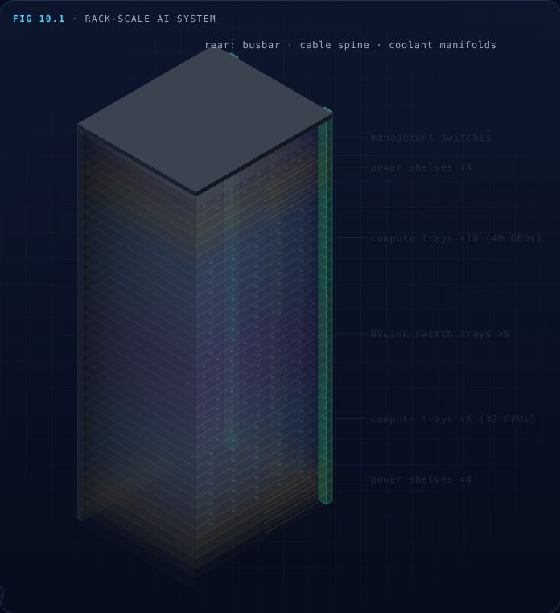 |
| Criterion | Status | Evidence / note |
|---|---|---|
| Entire source explanation represented | met | See source-map.md; China-lithography remark deliberately omitted (unverified) |
| All ten chapters present | met | |
| Understandable by scrolling alone | met | Educational critic reconstructed the full chain from the page |
| All nine interactions work | met | Tested on desktop, mobile, reduced motion |
| Visually driven, concise separate HTML text | met | All illustrations are SVG; all explanations are DOM text |
| Companies matched to correct roles | met | Technical critic round 2: PASS |
| Diagrams physically/functionally accurate | met | Schematics labelled; non-scale views flagged |
| Distinguishes design, tools, materials, fab, packaging, integration | met | Six flow types on the supply-chain map |
| Order → finished rack understood | met | Educational critic round 1–2 |
| Desktop + mobile | met | Emulated mobile; no real-device test |
| No material unresolved defects (tech + edu critics) | met | Tech PASS; edu: remaining gap rated minor, fixed |
| Functional browser testing completed | met | browser-test-report.md |
| Visual quality competitive with approved reference set | not verified | ./reference/visual_bar/ was not provided — no blind A/B comparison was run |
| All deliverables inspectable | met |
Round 1: FAIL · 5 material Round 2: PASS
Round 1: key confusion Round 2: minor only
Playwright + headless Chrome. All nine mandatory interactions verified to change both the SVG and the HTML explanation. Full table: browser-test-report.md.
./reference/visual_bar/.